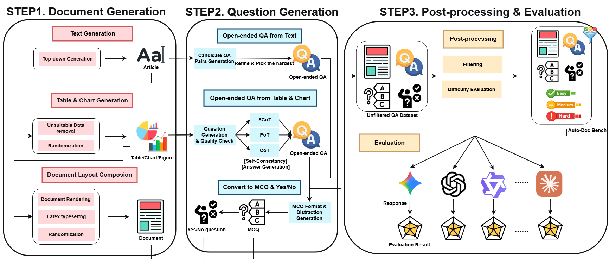
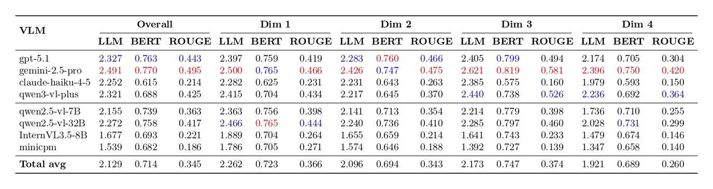
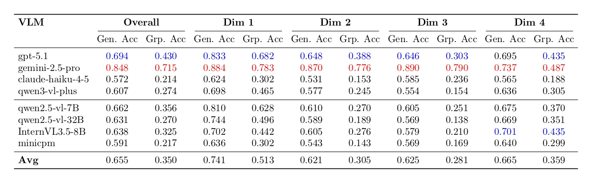
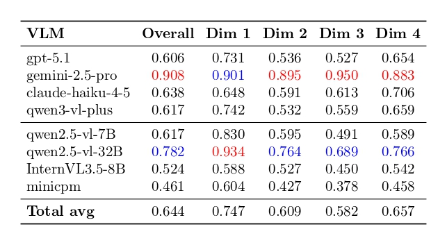

📝 Abstract
Evaluating multimodal document understanding remains challeng- ing due to the scarcity of scalable, domain-flexible, and multilin- gual benchmarks. Existing datasets depend heavily on human- collected documents and manual annotation, resulting in limited modality coverage, narrow domain diversity, and poor support for low-resource languages. We introduce AutoDoc-Bench, the first fully automated benchmark that jointly synthesizes multimodal documents—coherent text, structured tables, and data-consistent charts—and their associated question–answer pairs across open- ended, multiple-choice, and yes/no formats. Our pipeline enforces semantic alignment across modalities, integrates quantitative sig- nals into narrative text, and composes complete document layouts using a controllable LaTeX-based rendering system. Leveraging this framework, we construct a benchmark in Traditional Chinese, addressing a critical gap in multilingual multimodal evaluation. We further introduce a Bradley–Terry–based difficulty estimation method for stratifying QA items and conduct a comprehensive study of state-of-the-art VLMs using an LLM-as-a-Judge evaluation protocol augmented with ROUGE and BERTScore. Experimental results demonstrate that AutoDoc-Bench exposes significant perfor- mance gaps across modalities and difficulty tiers, offering a scalable and domain-adaptable foundation for future research in multimodal reasoning.
AutoDoc-Bench Overview

Overview of AutoDoc-Bench generation pipeline.
📘 Methodology
Our proposed pipeline aims to automatically construct document- based evaluation data and assess the performance MLLMs on them. The overall workflow consists of three main stages: document gen- eration, question generation, and model evaluation. Figure 1 pro- vides an overview of this process, showing how multimodal doc- uments are synthesized, how diverse question–answer formats are produced, and how models are subsequently evaluated. Our pipeline differs from prior document-generation systems in that it produces complete multimodal documents—integrating textual narratives, structured tables, and data-driven charts—together with corresponding question–answer pairs. Unlike layout-only or chart- only generation methods, our approach jointly synthesizes content and structure, ensuring semantic consistency across modalities. This design enables scalable creation of realistic document-based evaluation data across domains and languages.
🧪 Experiments
Evaluation Protocol
We adopt a multi-dimensional evaluation combining LLM-as-a-Judge [ 30 ] with text-similarity metrics. Specifically, the LLM judge assigns scores (1, 2, or 3) based on se- mantic correctness, while BERTScore [29 ] and ROUGE [9] measure semantic and lexical overlap for open-ended generation. For multiple-choice questions (MCQ), we report accuracy, de- fined as the proportion of correctly selected answers among all candidates. For yes/no questions, following the evaluation method- ology proposed by [ 3 ], we report General Accuracy (Gen. Acc) and Group Accuracy (Grp. Acc), where Gen. Acc measures overall cor- rectness and Grp. Acc evaluates balanced performance over paired true/false instances to reduce label bias. We report results across open-ended generation, MCQ, and yes/no formats.
Model evaluation summary for open-end questions

We report LLM-as-a-Judge score, BERT F1, and ROUGE-L F1 for overall and each dimension. Best LLM scores are highlighted in red, second best in blue.
Model evaluation summary for yes/no questions

We report general accuracy and group accuracy for overall and each dimension. Best LLM scores are highlighted in red, second best in blue.
Model evaluation summary for MCQ questions

We report accuracy for overall and each dimension. Best LLM scores are highlighted in red, second best in blue.
💌 Acknowledgment
I would like to express my profound gratitude to my advisor, Professor Ching-Chun Huang, whose patient mentorship and insightful feedback have greatly influenced both this thesis and my growth as a researcher. I am equally indebted to my labmate, Nhat-Tuong Do-Tran, whose collaboration, encouragement, and constructive suggestions have been invaluable throughout this journey. I also deeply appreciate the inspiring atmosphere of the Applied Computing and Multimedia Lab (ACM Lab), which has provided not only technical resources but also a supportive community that fostered my academic curiosity.
🌟 With heartfelt appreciation — Thank you all! 謝謝!